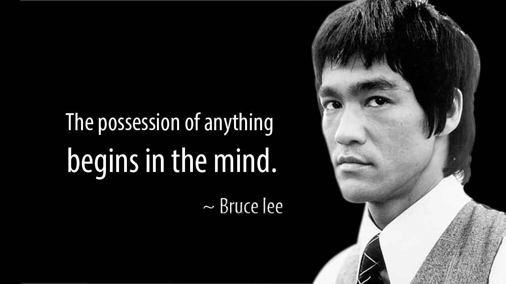

Bruce Jun Fan Lee (Lee Siu Loong) was born in 1940 in San Francisco, CA while his parents were on tour with the Chinese Opera. Ultimately raised in Hong Kong, Bruce Lee was a child actor appearing in more than 20 films. At the age of 13, Bruce took up the study of wing chun gung fu under renowned wing chun master, Yip Man.
Bruce left Hong Kong at the age of 18, came to the United States and made his way to Seattle, Washington where he worked in the restaurant of a family friend. He soon enrolled in the University of Washington where he pursued a degree in philosophy. Bruce began to teach gung fu in Seattle and soon opened his first school, the Jun Fan Gung Fu Institute. Two more schools followed in Oakland and Los Angeles. Concurrently Bruce married his wife, Linda and had his two children, Brandon and Shannon. In the mid sixties, Bruce was discovered while doing an exhibition at the Long Beach Internationals and a role as Kato in the tv series The Green Hornet soon followed. During this time, Bruce was also developing his own martial art, which he ultimately named Jeet Kune Do (translated: the way of the intercepting fist).
Bruce's art was steeped in a philosophical foundation and did not follow long held martial traditions. Instead it had at its core the ideas of simplicity, directness and personal freedom. After The Green Hornet series was canceled, Bruce encountered resistance while working in Hollywood and so headed to Hong Kong to pursue a film career. In Hong Kong he made 3 films, which consecutively broke all box office records and showcased martial arts in an entirely new way. Hollywood took notice and soon Bruce was making the first Hollywood / Hong Kong coproduction with a film called Enter the Dragon. Unfortunately, Bruce Lee died in 1973 before this film was released. This film catapulted him to international fame. Today Bruce Lee’s legacy of self expression, equality, and pioneering innovation continues to inspire people all around the world.
